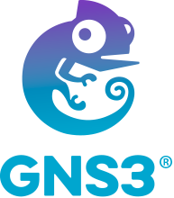

Grado Superior DAW
Desarrollo de Aplicaciones Web · IES Gaspar Melchor de Jovellanos
Graduado en DAW con formación en ASIR y especialización en Ciberseguridad.
Diseño y desarrollo aplicaciones web limpias, funcionales y seguras.
Pedro
Dev & Sec · España
Disponible
Años en formación
Titulaciones
Tecnologías
Soy desarrollador web recién graduado con una base técnica amplia. Mi paso por ASIR me dio una visión sólida de redes, sistemas y servidores, además de explorar el diseño de estructuras de red funcionales y ordenadas. Con conocimiento de configurar DHCP y DNS. y la especialización en Ciberseguridad me hizo pensar siempre en escribir código seguro.
Me apasiona construir proyectos de principio a fin: desde el diseño de la interfaz hasta el despliegue en producción. He diseñado y desarrollado proyectos en Node.js y JavaScript. Además de tener conocimientos básicos de Python y Java.
Actualmente, me encuentro aprendiendo Rust, ya no solo para el entorno web, sino para aplicaciones de escritorio, ya que me interesa aprender lenguajes nuevos y diferentes formas de aplicar el desarrollo de software.
Perfil de ciberseguridad
Especialización oficial + DAW
Sólida base en sistemas
Formación ASIR completa
Desarrollador web full stack
Frontend + Backend

Estructura de una red creada en GNS3 con MV en Linux.
Página web de compra de videojuegos, tipo Steam, con claves de cada juego.
Herramienta web que genera hashes MD5 y SHA-256.
2024-2026
Grado Superior DAW
Desarrollo de Aplicaciones Web · IES Gaspar Melchor de Jovellanos
2024-2025
Especialización en Ciberseguridad
Curso Especialización oficial · MEDAC
2022-2024
Grado Superior ASIR
Administración de Sistemas Informáticos en Red · IES Enrique Tierno Galvan